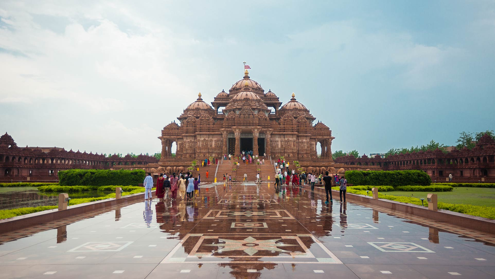

1. Delhi- The captivating capital
With old monuments and busy neighbourhoods subtly merging with a vibrant and contemporary cosmopolitan world, Delhi, the capital of India, is a
fascinating tourist destination. Poised along the banks of River Yamuna, Delhi, which is almost 1,000 years old, offers a mesmeric mosaic of
experiences, both heritage and contemporary. While the former honour the elegant ageing of centuries-old Delhi, the latter reiterate that the
capital is the heart of Indian democracy, and can keep pace with the most advanced of the metropolitans of the world.
-> Attractions
India Gate
A stunning archway standing as a tribute to the brave soldiers who sacrificed their lives for the country, India Gate is one of the landmarks
of Delhi. Built with sandstone, this 42-m-high gate was the first of its kind in the national capital.
Red Fort
Lying at the heart of Delhi, the majestic Red Fort, made of fine red sandstone, stands as a testament to the architectural legacy of the Mughals.

Akshardham
olding the Guinness World Records as the world's largest comprehensive Hindu temple, the Akshardham temple complex is a stunning piece of architecture.